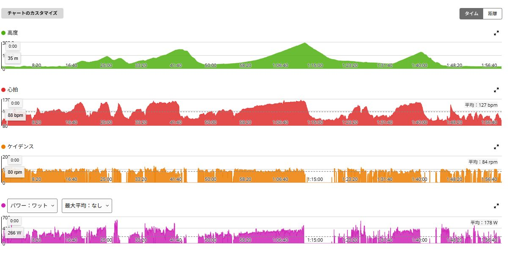
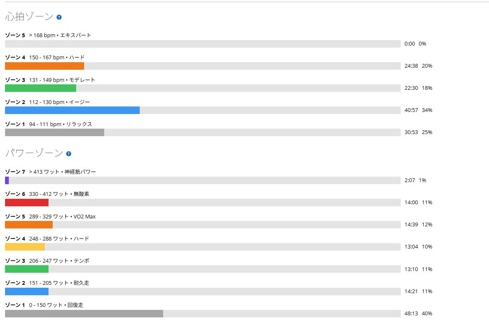
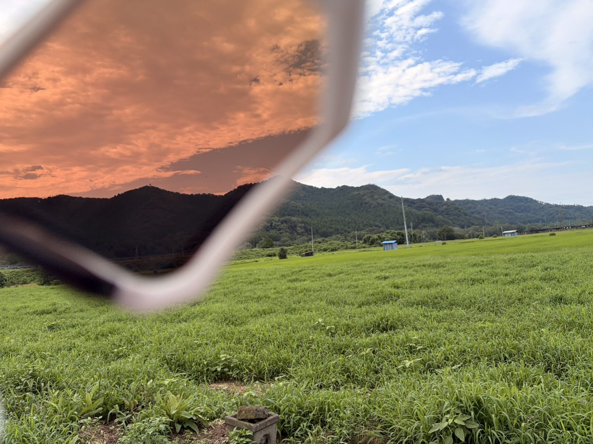

うどん効果だけではない。太平・琴平・唐沢で最後まで踏めた
前日は40分の回復走に抑え、夜はうどんをたらふく食べた。朝は比較的涼しく感じたものの、外へ出れば空は完全に夏だった。
それでも身体はよく動いた。心拍が上がってもまだ余裕があり、太平だけで終わらず琴平、唐沢まで高い出力を揃えられた。

太平・琴平・唐沢で出力を揃えられた
全体は52.65km、約2時間、獲得標高776m。平均178Wに対してNP250W、IF0.910、TSS164.5だった。下りや信号待ちを含む実走としては密度が高く、248W以上の時間は合計約44分、330W以上も約16分入っている。
- 太平7分12秒 / 平均322W / 平均心拍154bpm
- 琴平15分31秒 / 平均296W / 平均心拍151bpm
- 唐沢6分07秒 / 平均316W / 平均心拍149bpm
3本合計は約29分、時間加重平均は約307W。75kg基準では約4.09W/kgになる。太平で322Wを出したあとに琴平で15分以上296Wを維持し、さらに後半の唐沢で316Wまで戻せた。今日一番よかったのは、最初の登りだけで終わらなかったことだ。

心拍は上がった。それでも身体には余裕があった
最大心拍は167bpmで、ゾーン4には24分38秒入った。数字だけを見ればしっかり追い込んでいる。それでも体感は、身体全体が苦しくなって終わる感じではなかった。呼吸は増えているが、まだペダルを踏み続けられる余裕があった。
短い区間では2分06秒・343W、2分07秒・358W、44秒・414Wも入っている。その後も唐沢で316Wを出せたので、最近のSSTや外ゴルビーが繰り返し踏む力へつながってきた可能性はある。ただし一日だけで決めつけず、今日は数字と体感がそろった好調日として残しておく。

前夜のうどんは効いたのか
前夜はうどんをかなり食べた。数日かけて行う本格的なカーボローディングではないが、炭水化物を多めに取ったことがグリコーゲンの補充へ多少は役立ったかもしれない。約2時間の中で300W前後の登りを何本も繰り返す日なら、糖質が足りているかどうかは体感にも出やすい。
ただ、今日の好調をすべてうどんで説明するのも違う。前日の回復走、最近のSSTと外ゴルビー、走り始めの気温、慣れた機材、その日の体調。いろいろな条件がうまく重なったと考える方が自然だ。うどん一本で速くなれるなら話は簡単だが、さすがにAIにも止められそうである。
Ares 2ではなく、今日は初代Ares
本来は新しいS-Works Ares 2を実走で確認する予定だったが、今日は慣れている初代S-Works Aresを使った。結果として左足外側の圧迫感や痛みはなく、登り、ダンシング、約2時間の走行を通して足元が気になる場面もなかった。
今日のように出力を出せたのは、慣れたシューズで不安がなかったことも大きいと思う。Ares 2の実走テストは先送りになったが、初代Aresが現在の基準としてどれだけ合っているかは再確認できた。再調整ではクリートの前後位置だけでなく、角度、左右位置、BOAの締め具合も見比べたい。

涼しいと思ったけれど、空は完全に夏だった
平均気温は25.7℃で、走り始めは比較的涼しく感じた。それでも最高気温は31℃まで上がり、推定発汗量は1,359ml。青空、白い雲、濃くなった畑の緑を見ると、景色はもう完全に夏だった。
サングラス越しの空は赤く染まり、裸眼側には青空が広がる。体感が少し楽でも汗はしっかり出ているので、「今日は涼しい」という感覚だけで水分と塩分を軽く見ない方がよさそうだ。
今回やってみて思ったこと
太平322W、琴平296W、唐沢316W。心拍は上がったが身体には余裕があり、最後まで踏み直せた。前日のうどんも多少は役立ったかもしれないが、回復走、最近の練習、気温、慣れた初代Ares、当日の体調がまとまって好調につながったのだと思う。
理由を一つに決めつける必要はない。今日は踏めたという事実を残し、次はTSS164.5の負荷をきちんと回復へつなげる。土曜の白石峠〜定峰へ向けて、ここから上乗せするより疲労を抜く方が大切になりそうだ。
自分用メモ
- ルート太平 → 琴平 → 唐沢 / 52.65km / 獲得標高776m
- 全体1時間59分 / 平均178W / NP250W
- 負荷IF0.910 / TSS164.5
- 主な登り322W / 296W / 316W、時間加重平均約307W
- 心拍平均127bpm / 最大167bpm / ゾーン4 24分38秒
- 次翌日の脚、睡眠、疲労感を確認 / Ares 2は再調整後に実走